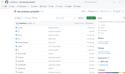

My name is Imelda Labang Donchi Ep Kemezeu. I come from Cameroon.I am 25 years old.I live in
UNITED
STATES OF
AMERICA and I am a student at Dallas College.
In 2023 ,I decided to switch in IT world to achieve my goals,and become a successful WEB
DEVELOPER.
FALL 2023,I took some courses like WEB DESIGN TOOLS,INTRODUCTION TO PYTHON AND DIGITAL
IMAGING.
Now, i have some skills in PHOTOSHOP,WEB DESIGN,PYTHON. I also love cooking and dancing and I speak
French
quite
well than English. In spring 2024,I took other classes :WEB AUTHORING , LINUX INSTALL AND CONFIGURATION,
BEGINNING WEB PROGRAMMING to move forward a step in the web development world.
EDUCATION
MEDICAL BACKGROUND
I have a diverse skill set and a passion for continuous learning. With a solid foundation in the
medical field, I bring a wealth of knowledge and experience to the table. However, my journey doesn't
stop there. In pursuit of new challenges and opportunities, I have embarked on a journey into the world
of
web
development.Combining the precision and analytical mindset honed in the medical arena with the
creativity
and
problem-solving
skills required in web development, I am carving a unique path. The transition from medicine to web
development showcases my adaptability and eagerness to embrace change.
As I navigate the complexities of coding languages, design principles, and development
frameworks, I am
not
just
learning to code but creating a bridge between the healthcare and tech domains. Their
commitment to growth and versatility is evident in this exciting fusion of two seemingly disparate
fields.You
can
find someone with a rich background, a commitment to lifelong learning, and the ability to
thrive in diverse and challenging environments. Whether diagnosing medical conditions or troubleshooting
code, I
bring a unique perspective and a dedication to excellence.
LEARNINGS AND TECHNIQUES
TECHNIQUES
In the web authoring class, spring 2024, we used the Visual studio code to write our html code and
used also
the W3
validator service,the W3 css-validator and, the wave accessibility
checker to test and debug the html ,css code and web page.Using a combination of font family, decorative fonts,
and font icons can dramatically enhance the visual appeal and functionality of a website. Selecting an
appropriate font family ensures consistency and readability across different devices and screen sizes, while
incorporating decorative fonts adds personality and style to headings and other prominent elements.
Additionally, leveraging font icons through classes enables the integration of scalable vector graphics into
various parts of the site, enhancing user experience by providing visually appealing and easily recognizable
symbols for navigation, actions, or highlighting key information. By strategically employing these typographic
elements, web designers can create engaging and memorable user interfaces that leave a lasting impression on
visitors.We used a Git repository for
our projet files.
 Capture of Github repository of web authoring class
We have done box-sizing, flexbox,responsive design,and floated elements on some elements on the site to make the
site more professional-looking.
We have used a responsive design ,view meta port meta tag on all pages to make the page responsive on all screen
devices. We used a CSS3 transitions and transformations and keyframe animations to enhance the design of the
site.
We have also created a custom color style sheet by using W3 CSS School,JavaScript HTML DOM to add an click event
button to change the theme of differents pages.
The usage of the responsive top nav bar helped us to make the navigation menu professional-looking, by
collapsing some links when the viewport became different.
And finally, using Bootstrap library , to design two pages easily just by adding some links and rules to
elements on the pages.
LEARNINGS
Bootstrap is a powerful front-end framework that offers a plethora of pre-designed components and utilities to
streamline the process of building responsive and visually appealing websites. Leveraging Bootstrap, designers
can quickly create professional-looking pages with minimal effort. The library provides a wide range of
components such as navigation bars, buttons, cards, forms, and modals, all styled with clean and modern
aesthetics. Its grid system enables flexible layout structures that adapt seamlessly to different screen sizes,
ensuring a consistent user experience across devices.
JavaScript continues to be a fundamental tool for achieving various goals in web development and
beyond.
Looking to the future, its versatility and widespread adoption make it a crucial language for building dynamic
and interactive web applications, mobile apps, server-side applications, and even desktop software. With
advancements in frameworks and libraries like React, Vue.js, and Angular, JavaScript empowers developers to
create rich user interfaces and immersive experiences that were once only possible with native applications.
In this class I have learned how to enhance the web page, to design it for user-friendly to make the user feel
confident , and some other stuff.These will help me to make my second step in the web world. The professor was
so explicit and available for the questions.
Learning Bootstrap and JavaScript offers numerous benefits in the current landscape of web development and
beyond. Firstly, mastering Bootstrap will allow me as a developer to rapidly prototype and build responsive
websites and
web applications for clients.Learning these provides developers like me ,with essential skills and tools to
thrive
in today's competitive tech landscape, enabling them to create compelling web experiences and unlock countless
opportunities for growth and innovation.